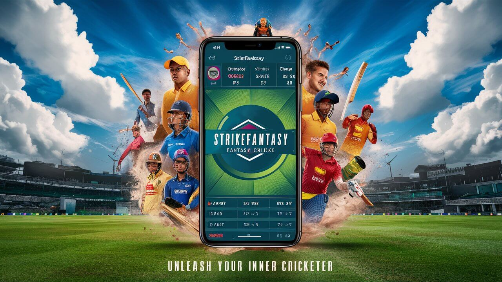
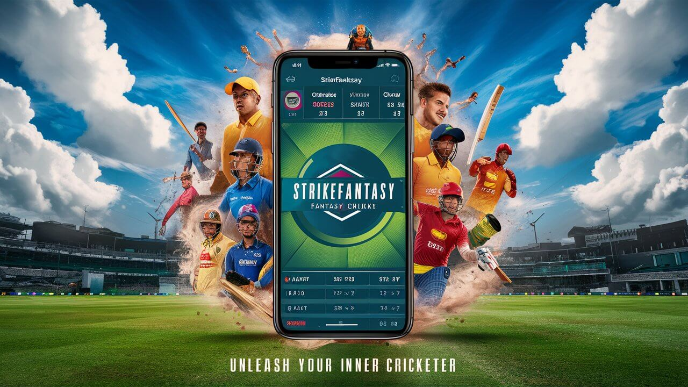

Welcome to CricketHub
Step into the exciting world of CricketHub, where your passion for cricket meets thrilling fantasy gameplay. Join our vibrant community of cricket enthusiasts and create your dream team to compete in various fantasy leagues.
GET APP LINKAbout us
Why CricketHub is Your Choice
-
Comprehensive and Engaging Platform:
CricketHub offers a dynamic and interactive platform where users can create and manage their dream cricket teams with ease. Our intuitive interface ensures that both seasoned players and newcomers can navigate and enjoy the game seamlessly.
-
Real-Time Match Updates:
Stay ahead with real-time updates on player performances, match scores, and crucial statistics. Our live data feed keeps you informed and allows you to make timely decisions to maximize your team’s potential.
-
Vibrant Community:
Join a community of passionate cricket fans from around the world. Engage in discussions, share strategies, and compete in friendly yet competitive leagues. CricketHub fosters a sense of camaraderie and connection among its users.
-
Extensive Player Database:
Access detailed player profiles, performance stats, and historical data to build a winning team. Our comprehensive database empowers you with the information needed to make strategic decisions and dominate your leagues.
-
Secure and Reliable:
Your security is our priority. CricketHub employs advanced security measures to protect your personal data and financial transactions, ensuring a safe and trustworthy environment for all users.
-
Exciting Rewards and Prizes:
Compete for fantastic rewards, including cash prizes and exclusive merchandise. Our diverse range of competitions and tournaments keeps the excitement alive, offering multiple opportunities to win big.
CricketHub: A Guide to Playing
Sign Up and Create Your Account
Join or Create a League
Build Your Dream Team
Manage Your Team
Track Your Progress
Participate in Challenges and Win Prizes
Engage with the Community
Stay Informed with Expert Insights
Preview CricketHub App
 

FAQ'S
Q: How do I create an account on CricketHub?
A: To create an account on CricketHub, simply visit our website or download the app from the App Store or Google Play. Click on the "Sign Up" or "Register" button and follow the prompts to provide your email address, create a password, and complete the registration process.
Q: How do I join a fantasy league?
A: Joining a fantasy league on CricketHub is easy. After logging in to your account, navigate to the "Leagues" section and browse through the available leagues. Select the league you want to join and follow the instructions to confirm your participation.
Q: How do I select players for my fantasy team?
A: To select players for your fantasy team, go to the "Team Management" or "Player Selection" section of the app. Browse through the available players, analyze their statistics, and add them to your team within the budget constraints provided.
Q: Can I make changes to my team after selecting players?
A: Yes, you can make changes to your fantasy team throughout the season. Use the "Manage Team" feature to make transfers, adjust your lineup, and select your captain and vice-captain based on real-time player performances.
Q: How are points calculated in CricketHub fantasy leagues?
A: Points in CricketHub fantasy leagues are awarded based on the performance of players during actual cricket matches. Points are allocated for runs scored, wickets taken, catches, stumpings, and other relevant actions, with bonus points for exceptional performances.
Q: How do I withdraw my winnings from CricketHub?
A: To withdraw your winnings from CricketHub, navigate to the "Withdrawals" or "Cash Out" section of the app. Follow the prompts to provide your payment details and request a withdrawal. Once processed, your winnings will be transferred to your designated account.